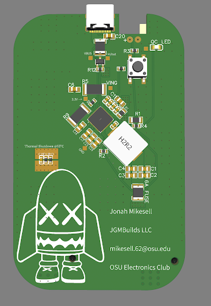
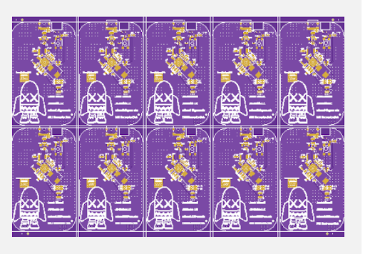
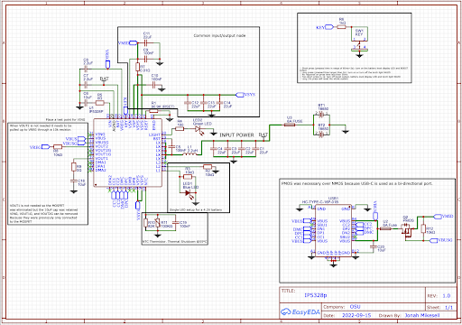
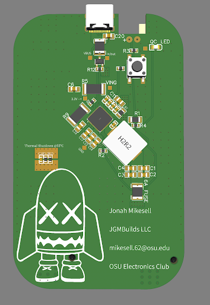
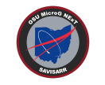

Student Projects
Jonah Mikesell
Background: I applied for funding (from The Electronics Club) to
create the Altoids Boost power bank module. These boards functioned as desired and were implemented into
more than 20 sold chargers. As apple begins selling USB-C quick charging blocks, demand for power banks
with USB-C input/output has increased.
Goal: To design a circuit board that has a single input/output USB-C port. Demand for USB-C
technology
is higher than ever and I want to fill the market need. Also these boards will integrate the battery
holders, making manufacturing even more efficient. Issues: Prototype #1 did not function at
all,
and the data sheet was unclear on what to do with the unused pins, causing issues with my schematic.
None
of my signals were routed using differential pairs. I resolved these issues by reaching out to Injoinic,
the manufacturer of IP5328p. They replied back saying I needed to connect VOUT1, VOUT2, and VIN to 10uF
capacitors connected to GND. Final board design (on the right) features strategic use of 0-ohm resistors
for a “5th” layer and easy customization for pins, exposed copper around thermistor for increased
thermal
conductivity, and 6A safety fuses for overcurrent protection.



Jason Jiang
For my project, I built a mechanical keyboard completely
from scratch using parts ordered online with
funds provided by the Electronics Club. From building this keyboard, I was able to learn a lot about how
keyboards work and are built. Most important of all though, I was able to practice and apply my newly
found soldering skills to mount the mechanical switches to the pcb board. The pcb board requires a mound
type soldering shape to connect the pins of the switches to the board. I messed up a few times on the
soldering, and got a lot of practice in removing the solder from the pins. I found the most effective
way was using a desoldering wick and a pump. Building the whole keyboard took up quite some time, around
6 or 7ish hours I believe. This is because, once I had the whole keyboard assembled, I realized an
issue. I had lubed my switches way too much, causing some of the keys to not function as well as they
could’ve. To fix this, I had to test which keys had this issue, and then desolder the switches and wipe
away the excess lube. Other than this, I was able to complete the project pretty smoothly and didn’t
encounter any other issues. This project was great for me, as it let me practice my soldering skills and
learn a ton about the keyboards we use every day.

Jonah Mikesell
Background: I applied for funding (from The Electronics Club) to create the Altoids Boost power bank module. These boards functioned as desired and were implemented into more than 20 sold chargers. As apple begins selling USB-C quick charging blocks, demand for power banks with USB-C input/output has increased. Goal: To design a circuit board that has a single input/output USB-C port. Demand for USB-C technology is higher than ever and I want to fill the market need. Also these boards will integrate the battery holders, making manufacturing even more efficient. Issues: Prototype #1 did not function at all, and the data sheet was unclear on what to do with the unused pins, causing issues with my schematic. None of my signals were routed using differential pairs. I resolved these issues by reaching out to Injoinic, the manufacturer of IP5328p. They replied back saying I needed to connect VOUT1, VOUT2, and VIN to 10uF capacitors connected to GND. Final board design (on the right) features strategic use of 0-ohm resistors for a “5th” layer and easy customization for pins, exposed copper around thermistor for increased thermal conductivity, and 6A safety fuses for overcurrent protection.
For my project, I built a mechanical keyboard completely from scratch using parts ordered online with funds provided by the Electronics Club. From building this keyboard, I was able to learn a lot about how keyboards work and are built. Most important of all though, I was able to practice and apply my newly found soldering skills to mount the mechanical switches to the pcb board. The pcb board requires a mound type soldering shape to connect the pins of the switches to the board. I messed up a few times on the soldering, and got a lot of practice in removing the solder from the pins. I found the most effective way was using a desoldering wick and a pump. Building the whole keyboard took up quite some time, around 6 or 7ish hours I believe. This is because, once I had the whole keyboard assembled, I realized an issue. I had lubed my switches way too much, causing some of the keys to not function as well as they could’ve. To fix this, I had to test which keys had this issue, and then desolder the switches and wipe away the excess lube. Other than this, I was able to complete the project pretty smoothly and didn’t encounter any other issues. This project was great for me, as it let me practice my soldering skills and learn a ton about the keyboards we use every day.
NASA Micro-g NExT Challenge
Students from The Ohio State University received an invitation to participate in phase two of NASA’s Micro-g Neutral Buoyancy Experiment Design Teams (Micro-g NExT) challenge. This challenge tasks students with developing a tool or device needed by NASA to return to the Moon by 2024 for their Artemis Program. The tools created by student teams are tested in the Neutral Buoyancy Laboratory—a 6.2-million-gallon indoor pool at the Johnson Space Center in Houston, Texas, where astronauts train for spacewalks. The Ohio State University chose to tackle the “Orion crew safety–Surface Autonomous Vehicle for Emergency Response (SAVER) challenge” this semester. They will be sending their device: Surface Autonomous Vehicle for Initial Search and Rescue Response (SAVISARR) to NASA for testing in June. The team’s invention could be used in future space missions.
In the event of an unplanned egress (launch abort, contingency landing, etc.), Orion crew members will be exiting the crew vehicle and using a life raft. Each astronaut will be equipped with a 121.5 MHz emergency distress beacon to ensure they can be located should they be separated from the life raft and Orion capsule. The SAVISARR device is sent into the water to search for the distress beacon to deliver the astronaut life-saving supplies. This device has been tested at Ohio State’s Aquatics Center and will be tested by NASA in June. The tracking system sits on top of a 2-foot tall antenna tower. The Ohio State University Micro-g NExt team appreciates the willingness of the Center for Design and Manufacturing Excellence to assist with this project. CDME 3D printed the antenna tower out of carbon fiber and ABS plastic within one week of being provided files. Swift manufacturing of this part allowed the construction of the device to continue on schedule.
Participating in Micro-g NExT allows students to apply knowledge learned in the classroom in order to contribute to real NASA missions. Previous student-developed tools have been manufactured and used in spacewalks outside the International Space Station. NASA is committed to engaging students in work that will enable humans to explore the solar system, as humans head back to the Moon and on to Mars. Artemis Student Challenges are managed by NASA’s Office of STEM Engagement. The challenges help support the agency’s education policy of using NASA’s unique missions and programs to engage and encourage students to pursue science, technology, engineering, and math careers.
Documents
For any questions or concerns, contact the project Team Lead (Eddy Lui), at lui.72@osu.edu.
Who?
Matt Nichols completed the design and came up with the vision for these badges. Additionally, the Electronics Club officers were instrumental in adding additional features and giving feedback on the design and look. Special thanks to: Eddy Lui, Max Fojtik, Siddharth Venkatesan, Jason Jiang, Jonah Mikesell, and Zach Kittleson.
What/Why?
Ohio State University’s OHI/O club coordinates numerous marathon hacking and making events over the semester. Autumn 2022 was the 10th anniversary of their hackathon event, HackOHI/O. In commemoration of this milestone, the Electronics Club elected to fund and design PCB badges for the event staff to wear during the event. These were inspired by the DEFCON badges.
How?
The design of these badges was intended to be very simplistic. Many ideas were discussed, but due to time constraints a simple LED circuit with an on off switch was decided upon. Most of the “cool factor” for these badges comes from the PCB itself so less emphasis was placed on the circuitry. KiCad 5 was used for the design. The HackOHI/O and Electronics Club logos and an image of the state of Ohio were imported so they could be traced out with copper fills. To create the artwork a combination of the black soldermask, white silkscreen, bare copper, and bare FR4 material were used. Areas that are visibly silver on the badge are bare copper that have had hot air solder leveling (HASL) applied with a lead-free solder.
Electrically, the badges consist of an LED, CR2032 battery, SPST slide switch, and a 100 Ω resistor. The LED is reverse mounted so that it shines through the FR4 material and illuminates the X on the front of the badge. The soldermask and copper were removed from both the X and where the LED mounts to enable this. A fun bonus feature is that the word “hack” is connected to the negative terminal of the battery and the word “OHI/O” is positive (connected to the 100 Ω resistor). This allows the wearer to use the badge as a LED tester. No current limiting resistor is required since it is already built into the back of the badge. The battery life is calculated to power the LED for a minimum of 12 hours. Preliminary testing is showing the practical life to be higher than that which is excellent. A minimum requirement is that it last for one full event day which is roughly 12 hours.